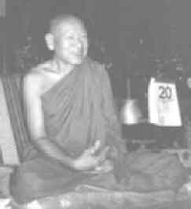

|
For the first years, there was a lot of contentiousness, and even some resistance from the village monks. A few lay supporters would tell them how strictly the forest bhikkhus kept the Vinaya and of course the village monks did not have the same standard. Conflicts also arose when the lay people reacted to Ajahn Jun's desanas which encouraged them to give up killing, stealing, indulging in drinking, gambling and rites and rituals, like 'lucky money' or asking for lottery numbers. In spite of these difficulties, he managed to bring everything into harmony in his characteristic way. His influence was so deeply felt that now the head monk of the village monastery comes to Wat Pah Beung Kao Luang to give Upasampada (higher ordination) to those who wish to be ordained at the beginning of each Vassa.
All over Thailand, Luang Por Jun became well known, respected and loved for his sincere practice and integrity, by monks and lay people alike. He was for everyone more than a teacher; he was also a friend, who would continuously push us to understand the True Dhamma in his down-to-earth way. When it came to Vinaya, Luang Por himself had a very strict standard. But even so, he was able to make Vinaya come alive and take on meaning for people, so that the standard could be preserved without a sense of hardness or repression but in a human and creative way. Such was his wisdom.
Luang Por Jun was also very skilled in pointing out the more subtle aspects of one's practice, especially the things which we often overlook. And since he was very attentive and alert as to how everybody was doing during the day, he could adeptly point out our blind spots or weak points without offending or 'hurting' our feelings. Even when what he had to say was painful it came with so much metta, space and encouragement that we could accept it and smile at our imperfections, rather than denying them, or blaming ourselves or others. Everyone could appreciate this kind of gentle 'feed-back' as a sincere way of supporting them to develop the Path.
My first experience at Wat Beung Kao Luang was about eleven years ago. I left the home life in December 1983 and went to Wat Pah Nanachat, where I shaved my head and took the eight precepts. Very soon I became interested in staying with a nuns' community and the opportunity arose to go up to Wat Pah Beung Kao Luang, a remote forest monastery about 55 km from Ubon city. I stayed there for three months with Luang Por Jun and his community. In those days there were about sixteen nuns aged between 13 and 86. The two old ones, over 80, were 'retired' and the two senior nuns who managed the community were about 35.
Luang Por Jun always emphasised communal togetherness. He had an incredible ability and skill to unite people, not only forest and city monks, but also those living within the monastery. He knew just how to encourage us to use communal life as an important part of the practice. Everything was done together; from early morning chanting at 3:30 a.m., the meal, afternoon work, meditation and evening puja. As far as I could observe, it was the same with the monks. They would have periods of hard work; construction, cleaning etc. and everybody would join in and work together with a light and joyful heart.
|
 |
 A Temple Arises; Ajahn Amaro
A Temple Arises; Ajahn Amaro